문제는 “AI 가 명령을 못 만든다” 가 아니었다. AI 가 넣기만 할 수 있었던 것이다.
예전 도크는 “새로 만들 명령”만 뽑아서 목록 맨 아래에 붙였다. 그래서 “둘째 줄 대사를 고쳐 줘” 라고 하면 둘째 줄을 고치는 대신 고친 문장을 세 번째 줄로 또 붙였다. 게임에서는 옛 대사와 새 대사가 둘 다 나온다. 지우기도, 순서 바꾸기도 아예 불가능했다.
고친 방식은 간단하다. 모델에게 “고친 뒤의 최종 목록 전체”를 내게 하고, 무엇이 새로 생겼고 무엇이 바뀌었고 무엇이 사라졌는지는 앱이 직접 비교해서 계산한다. 그 결과를 명령 목록이 있던 그 자리에 유령 행으로 겹쳐 보여 준다. 마음에 안 드는 줄은 한 줄씩 뺄 수 있고, 반영은 되돌리기 한 번으로 전부 취소된다.
clicksNeeded=3 → undoClicks=1테스트 이벤트는 두 줄짜리다. 나무 상자를 열어본다. / 잠겨 있다.
여기에 “둘째 줄 대사를 더 단단한 말투로 고쳐 줘” 라고 부탁했다.
잠겨 있다. 가 그대로 남고 아래에
새 대사가 붙었다. 헤더가 3개다. 게임에서는 두 대사가 연달아 나온다. 도크는
“명령 1개를 넣었어요” 라고 말하는데, 사용자가 부탁한 건 넣기가 아니었다.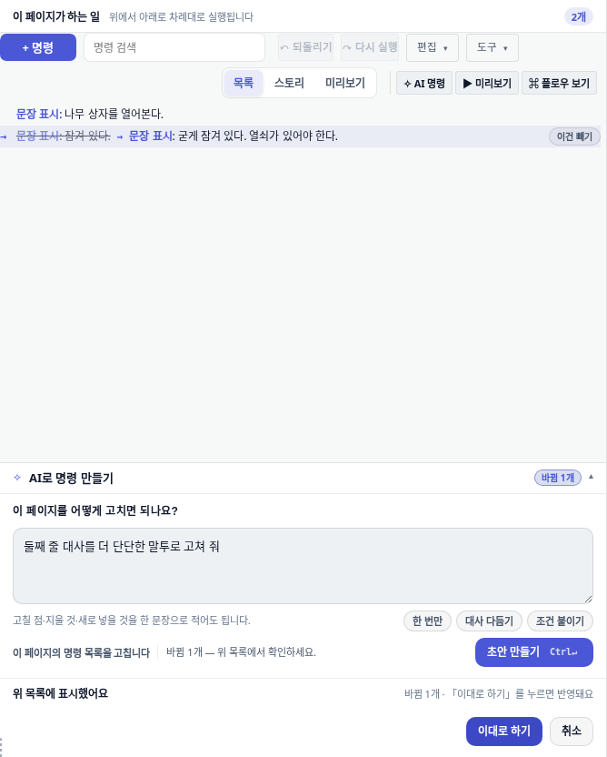
잠겨 있다.(취소선) → 굳게 잠겨 있다. 열쇠가 있어야 한다. 로 보인다.
줄 수는 그대로 2개. 반영하면 목록도 2줄이다.예전에는 초안이 도크 안쪽 아래에 «만든 명령» 이라는 별도 카드로, 아이콘도 색깔도 없는 글자 목록으로 떴다. 실제 명령 목록은 화면 위쪽에 따로 있었다. 사용자는 두 곳을 눈으로 왕복하면서 “이 세 줄이 위 목록 어디에 들어가지?” 를 스스로 상상해야 했다.
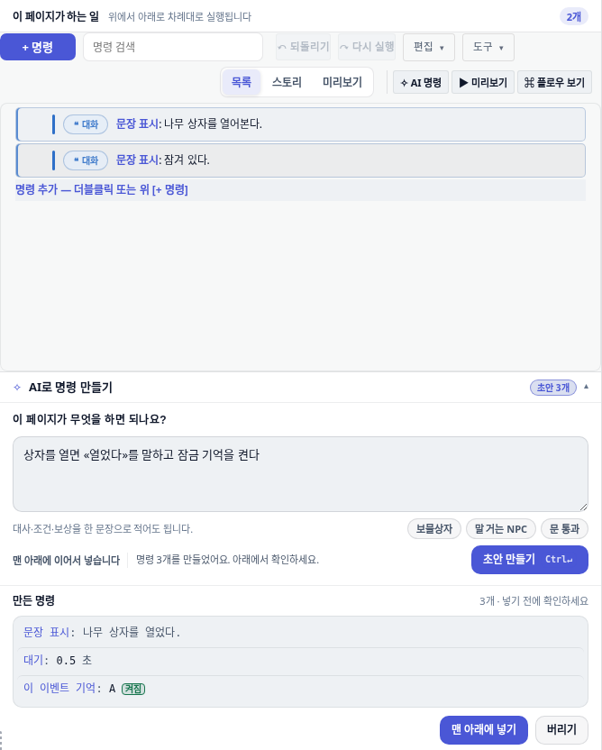
맨 아래에 넣기 — 넣는 것 말고는 선택지가 없다.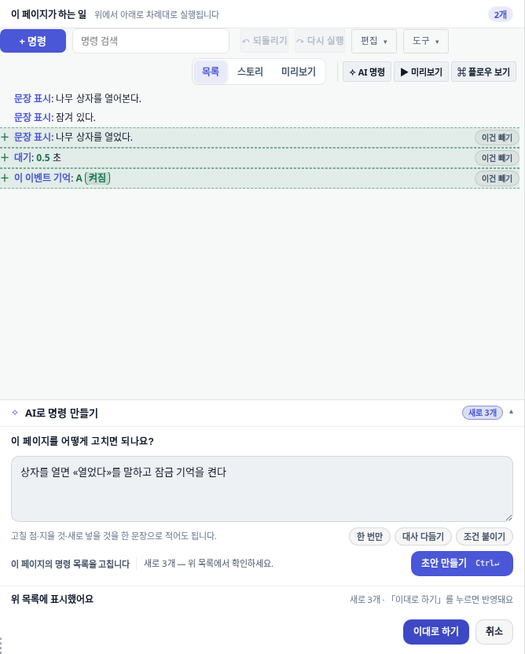
＋ 표시된다. 목록과 같은 자리, 같은 카드 모양이라 왕복할 게 없다.
칩은 “새로 3개”, 버튼은 이대로 하기.예전 도크는 반영한 뒤 “되돌리려면 툴바의 ↶ 되돌리기.” 라고 안내했다. 그런데 실제로는 명령을 한 개씩 집어넣었고, 편집 기록도 한 개씩 쌓였다. 3개를 넣으면 ↶ 를 3번 눌러야 원래대로 돌아온다. 안내문과 동작이 어긋난 것이다.
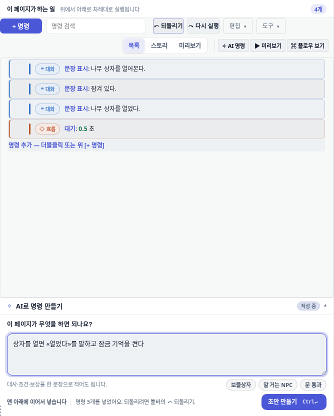
applied=3 clicksNeeded=3. 안내문은 여전히 “↶ 되돌리기” 한 번인 듯 말한다.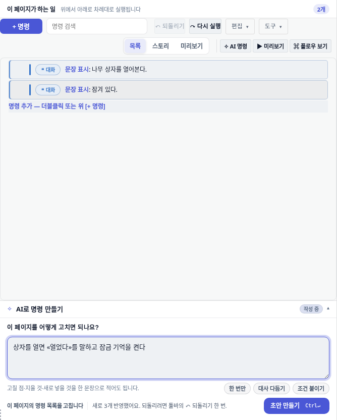
applied=5 undoClicks=1 rowsAfterUndo=2.고친 방법: 명령 개수만큼 insertCommand 를 부르던 것을,
commandToolbarHistory.replaceAll() 한 번으로 목록을 통째 교체하도록 바꿨다.
스냅샷은 교체 직전에 한 번만 찍힌다.
핵심 아이디어 한 줄: 모델에게 “설계도 수정 지시서” 를 쓰게 하지 말고, “고친 설계도 완성본” 을 내게 한다.
| 예전 방식 | 지금 방식 | |
|---|---|---|
| 모델이 내는 것 | 끼워 넣을 새 명령들 | 고친 뒤의 최종 목록 전체 |
| “무엇이 달라졌나” 계산 | 계산 안 함 — 그냥 붙인다 | 앱이 전/후를 나란히 대조 |
| 지우기 · 고치기 · 순서 바꾸기 | 불가능 | 가능 |
| 기존 명령을 다시 쓰는 양 | 0자 | 최대 1만 2천자까지 그대로 다시 실어 준다 |
명령에는 이름표(고유 id)가 없다. 위치는 [명령번호, 분기번호, 명령번호, …] 처럼
번호를 번갈아 적은 배열이고, 분기는 -2(조건이 맞을 때) -3(그 외)
같은 음수 약속으로 표시한다. 여기서 “3번째를 지우고 5번째를 고쳐라” 를 시키면,
지우는 순간 그 뒤 번호가 전부 한 칸씩 밀린다. 모델이 이 산수를 여러 번 연달아 맞히기는 어렵다.
비유하면 — 줄 번호만 적힌 원고에 “7번 줄 지우고 12번 줄 고쳐” 라고 전화로 지시하는 것과, “고친 원고 전체를 다시 타이핑해서 보내” 라고 하는 것의 차이다. 앞쪽은 한 번 밀리면 전부 어긋난다. 뒤쪽은 완성본이 오니까, 어디가 달라졌는지는 받는 쪽이 두 원고를 나란히 놓고 세면 된다.
그 “나란히 놓고 세는” 일을 하는 게 새로 만든 commandDiff.ts 다. 명령을 트리째 비교해서
줄마다 네 가지 중 하나를 붙인다.
| 표시 | 뜻 | 화면에서 |
|---|---|---|
keep | 그대로 | 평소 목록과 똑같이 보인다 |
add ＋ | 새로 생김 | 초록 점선 배경 |
remove − | 없어짐 | 빨간 배경 + 취소선 |
change → | 바뀜 | 한 줄 안에 옛것(취소선) → 새것 |
비교할 때 자기 필드만 본다. 예를 들어 조건 분기의 조건은 그대로인데 그 안쪽 대사만
바뀐 경우, 조건 분기 줄은 keep 이고 안쪽 줄만 표시된다. 조건 분기 통째로 교체된 것처럼
보이면 읽을 수 없다.
필드 이름이 종류(kind)마다 겹친다. loop.body 는 반복문 안쪽 명령 묶음이지만
text.body 는 대사 문구다. 처음 구현은 이름만 보고 body 를 비교에서 뺐고,
그 결과 상자다 와 낡은 상자다 가 같은 줄로 판정됐다.
“바뀜” 줄이 아예 만들어지지 않았다. 종류별로 그 종류에서만 분기인 필드를 지우도록 고쳤다
(BRANCH_FIELDS_BY_KIND). 단위 테스트가 이걸 잡았다.
AI 가 내놓은 것 중 두 개는 마음에 들고 하나는 아닐 수 있다. 각 줄 오른쪽의
이건 빼기 를 누르면 그 줄만 빠진다. 다시 누르면 다시 적용 이다.
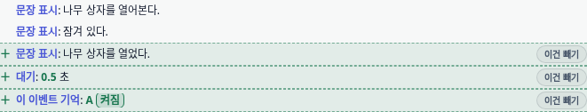
＋ 세 줄. 칩은 “새로 3개”.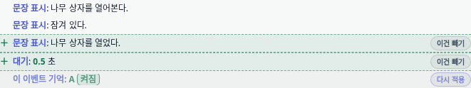
이 이벤트 기억: A 켜짐)이 흐려지고 버튼이
다시 적용 으로 바뀌었다. 칩은 “새로 2개”.
실측: offered=3 applied=2 — 반영하면 4줄이 된다.초안에 없어지는 줄이 있으면 반영 버튼 글자가 이대로 하기 에서
이대로 하기(지우는 것 포함) 로 바뀐다. 실수로 대사를 날리는 일을 막기 위한 것이다.
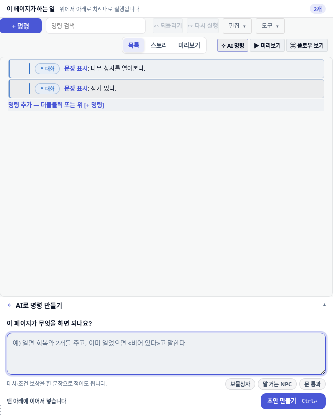
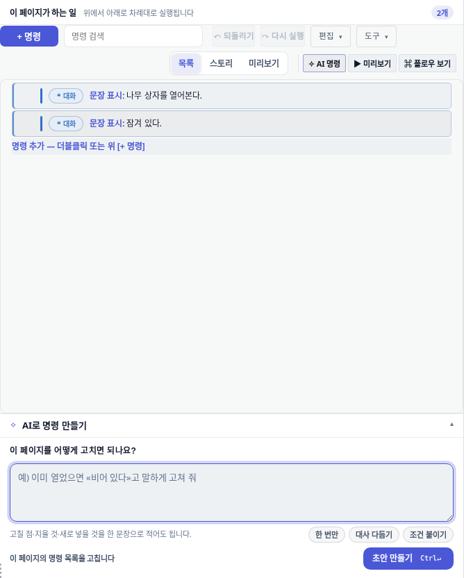
목록에서 명령 한 줄을 고른 상태여도 이제 “삽입 위치”라고 말하지 않는다. 선택은 삽입 지점이
아니라 “내가 지금 이걸 보고 있다” 는 문맥이고, 프롬프트에도 번호 배열이 아니라
사용자는 지금 목록에서 「조건 분기」 커맨드를 고른 상태다 처럼 사람 말로 넘어간다.
기존 명령이 1만 2천자를 넘으면 최종 목록 전체를 주고받기가 부담스럽다. 이때는 자동으로
“뒤에 붙이기” 방식으로 내려오고, 도크도 그렇게 말한다 —
페이지가 길어 「…」 다음에 새로 넣기만 합니다. 예전에는 2천자에서
문자열 중간을 자르고 …(생략) 을 붙여, 모델이 닫히지 않은 JSON 을 보게 했다.
지금은 자르지 않는다 — 통째로 주거나, 아예 안 주고 방식을 바꾼다.
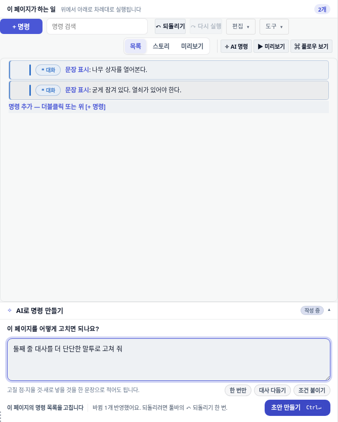
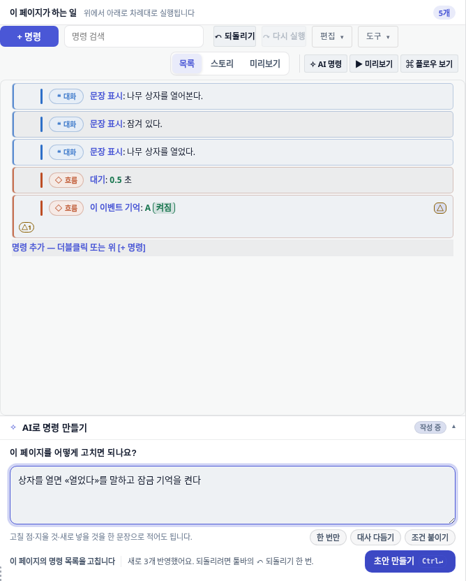
새로 만든 것과 고친 것 전부에 테스트가 붙어 있다. 아래 숫자는 이 브랜치에서 실제로 돌린 결과다.
| 무엇 | 명령 | 결과 |
|---|---|---|
| 전/후 비교 로직 (신규) | test/commandDiff.test.ts |
12개 통과 |
| 프롬프트 계약 + 도크 동작 | test/eventCommandAssist.test.ts |
25개 통과 |
| 에디터 레이아웃 회귀 | test/eventEditorLayoutHierarchy.test.ts |
6개 통과 |
| 브라우저 끝단 (도크 계약) | test/e2e/event-ai-command-dock.spec.ts |
8개 통과 |
| 브라우저 끝단 (이 보고서 사진) | test/e2e/eventAiDockRedesignShots.spec.ts |
4개 통과 |
| 타입 검사 | tsc --noEmit -p tsconfig.app.json |
오류 0 |
| CSS 예산·의존성 게이트 | npm run gates:css |
통과 |
CSS 게이트는 처음에 실패했다 — 새로 쓴 스타일에 하드코딩 색상 6개가 들어갔기 때문이다
(hexLiterals 1749 → 1755). 기준선을 올리지 않고 var(--success) 토큰으로 바꿔
1749 로 되돌렸다.
같은 실행에 딸려 돌아간 이벤트 에디터 주변 e2e 6건이 실패한다. 이 변경 때문이 아니다.
확인 방법은 이렇다 — 3438cacd 를 그대로 체크아웃한 별도 워크트리에서
같은 명령을 돌렸고, 같은 6건이 같은 메시지로 실패했다.
| 실패한 테스트 | 이 브랜치 | 깨끗한 3438cacd |
|---|---|---|
event-editor-aux-non-occlusion.spec.ts:42 preset/toolbar 겹침 | 실패 | 실패 (동일) |
event-editor-ux-progressive-evidence.spec.ts:92 | 실패 | 실패 (동일) |
eventEditorMockupShots.spec.ts:32 / 113 / 144 / 164 | 4건 실패 | 4건 실패 (동일) |
겹침 테스트의 실패 메시지는 두 쪽 모두 Expected: false / Received: true 로 같다.
eventEditorMockupShots 쪽은 event-page-tab-3 을 기다리다 시간 초과하거나
브라우저가 죽는다(Target crashed) — 측정 당시 이 기계의 부하 평균이 297 이었다.
같은 실행에서 AI 도크 자체의 겹침 테스트(같은 파일 87행)는 통과했다.
| 파일 | 무엇 |
|---|---|
src/editor/panels/eventEditor/commandDiff.ts (신규 435줄) |
전/후 목록을 트리째 비교해 keep·add·remove·change 를 계산하고,
빼기로 고른 줄을 되돌려 최종 목록을 만든다. DOM·스토어를 안 만진다. |
src/editor/panels/eventEditor/stagedDiffView.ts (신규 191줄) |
그 결과를 명령 목록과 같은 카드 모양으로 그린다. 줄마다 빼기 토글. |
src/ai/eventCommandAssist.ts |
출력 계약을 “끼워 넣을 명령” → “고친 뒤 최종 목록” 으로. 예산 2천→1만 2천자, 중간 자르기 폐지, 선택은 사람 말로 전달. |
src/editor/panels/eventEditor/aiAssist.ts |
도크가 삽입 대신 초안을 겹쳐 두고, 반영은 replaceAll 한 번. |
src/editor/panels/eventEditor/commandToolbarHistory.ts |
replaceAll() 추가 — 여러 곳이 한꺼번에 바뀌어도 기록은 한 칸. |
src/editor/panels/eventEditor/content.ts |
목록 자리에 초안 칸을 마련하고, 초안이 있으면 목록을 숨긴다. |
src/styles/editor/event-editor-ai.css |
유령 행 스타일. 도크 안쪽 스크롤러 제거(::details-content 함정 회피). |
남은 것 하나. 지금 “빼기” 는 줄 단위다. 조건 분기처럼 자식이 있는 줄을 빼면 그 안쪽도 함께 원래대로 돌아온다. 안쪽만 따로 빼는 것도 되지만(테스트로 확인됨), 화면에서 부모·자식 관계를 더 분명히 보여줄 여지가 있다.
이 문서의 모든 사진은 아래 폴더에 있다. 사진을 다시 만드는 명령도 함께 적는다.
# «후» 사진 — 이 브랜치에서
DEV_SERVER_PORT=9247 npx playwright test test/e2e/eventAiDockRedesignShots.spec.ts
# «전» 사진 — 3438cacd 를 별도 워크트리에 체크아웃한 뒤
DEV_SERVER_PORT=9251 npx playwright test test/e2e/eventAiDockBaselineShots.spec.ts